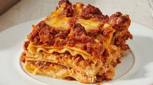

Lasagna

Lasagna is a classic Italian comfort food with layers of pasta, rich meat sauce,
creamy béchamel, and melted cheese baked to perfection.
Ideal for family dinners or special occasions.
Ingredients
- 9 lasagna sheets
- 500g minced meat
- 1 cup tomato sauce
- 1 cup béchamel sauce
- 2 cups shredded mozzarella cheese
- 1 chopped onion
- 2 cloves garlic, minced
- Salt and pepper to taste
Steps
- Preheat oven to 180°C (350°F).
- Cook lasagna sheets according to package instructions.
- Sauté onions and garlic, add minced meat, cook until browned.
- Add tomato sauce, simmer 10 minutes, season to taste.
- Layer pasta sheets, meat sauce, béchamel, and cheese in a baking dish.
- Repeat layers and top with remaining cheese.
- Bake for 30-35 minutes until golden and bubbly.
- Let it rest 10 minutes before slicing and serving.
Tip: Cover with foil for the first 20 minutes to prevent burning.